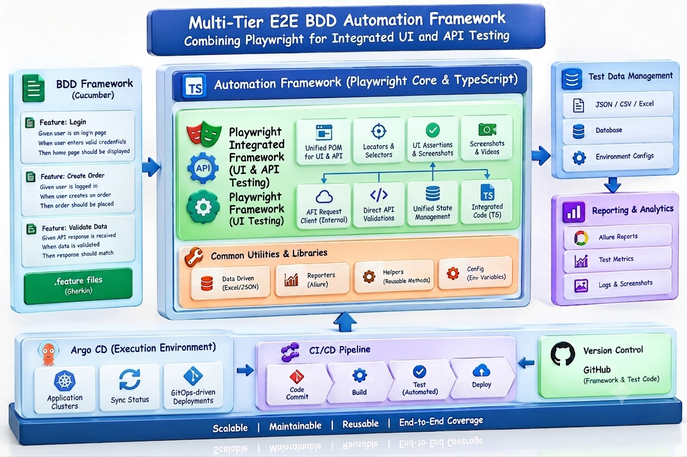
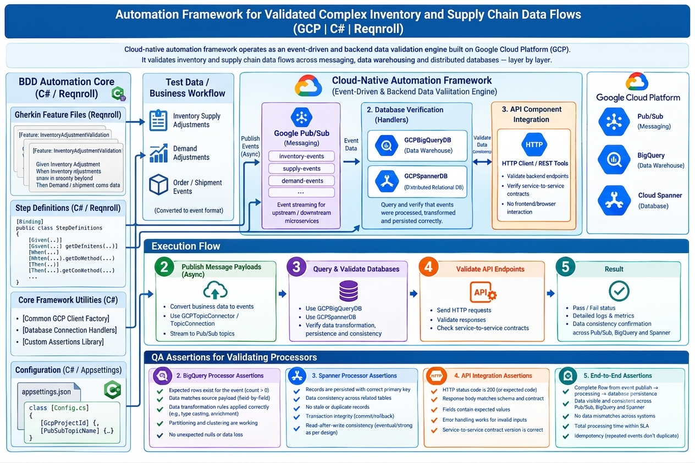

CASE STUDY 01
2025 — PRESENT
COSTCO APPLICATION
Cloud-Native Automation & Data Integrity
Retail supply chain and inventory management on web and cloud infrastructure. Architected a multi-tier E2E BDD automation framework combining Playwright for UI validation and API automation. Validated complex inventory data flows across GCP Pub/Sub messaging, BigQuery, and Cloud Spanner databases.
check_circle
Managed complete STLC in Azure DevOps: user stories, test execution, defect lifecycles.
check_circle
Integrated GenAI (Claude, Gemini, GitHub Copilot) to accelerate scenario generation & code refactoring.
check_circle
Monitored distributed execution via Argo Logs with continuous CI/CD pipeline verification.
95%
Reliable E2E UI & API Test Automation
verified_user
ARCHITECTURE DATA FLOW
1. Web UI
Playwright BDD
↓ REST DISPATCH
2. RESTful APIs
RestSharp
↓ ASYNC EVENT
3. Message Bus
GCP Pub/Sub
↓ CONSISTENCY SYNC
4. Persistence
Spanner & BigQuery
CI/CD Engine: Azure DevOps + Argo CD
MULTI-TIER PLAYWRIGHT AUTOMATION HARNESS
FIG. 5.1

GCP & CLOUD-NATIVE BACKEND VERIFICATION
FIG. 5.2
